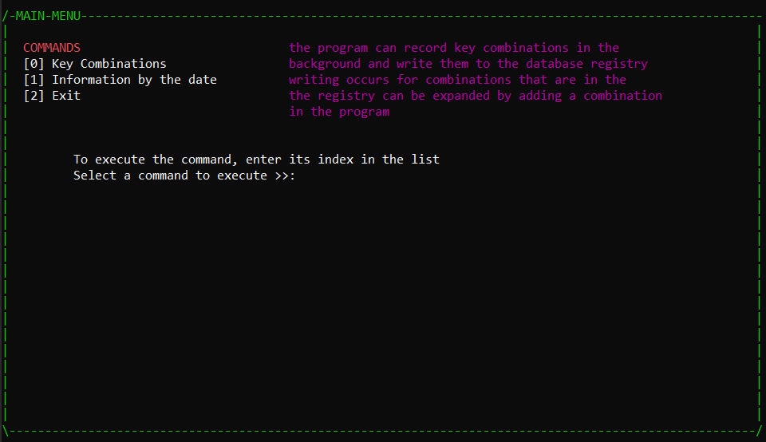
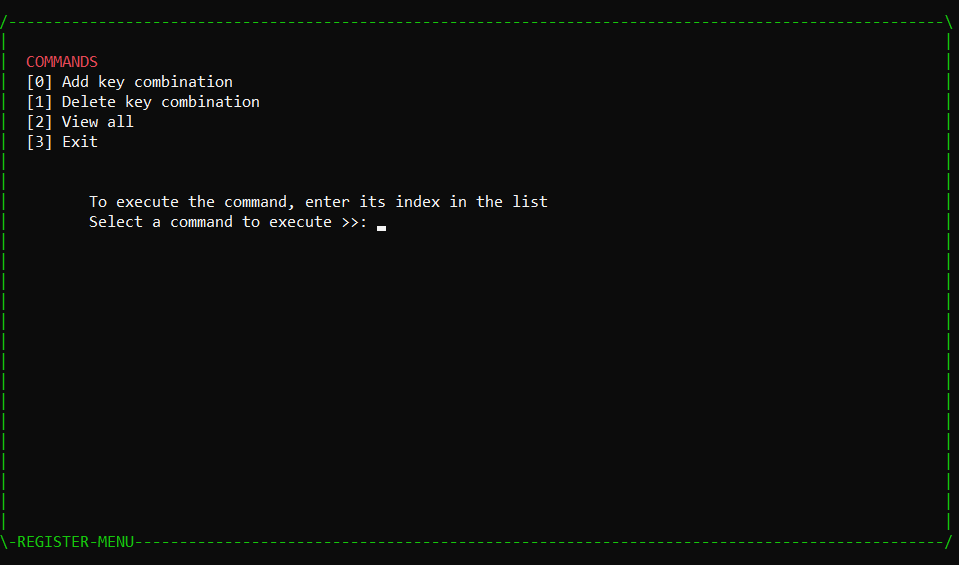
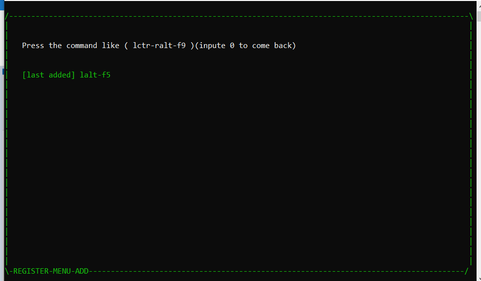
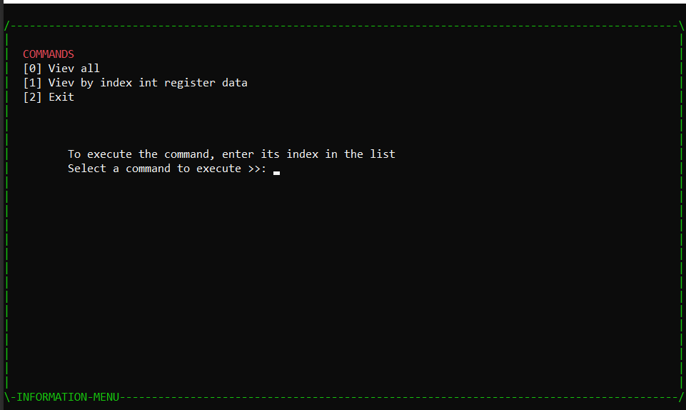

HOT KEY ANALYZER
The program can record key combinations in the
background and write them to the database registry
writing occurs for combinations that are in the
the registry can be expanded by adding a combination
in the program
When the program starts, it intercepts the key combinations and compares whether there is an existing combination in the database registry
Main menu ( hear you can choise the comand and go into next menu)

Register menu ( hear tou can choise the comand that could delete add viev the commands combination from(into) db)

After imput into add proces

infor menu ( hear you can viev all LOG of the presed combinations )

You can add combinations to the database and view the time and which combination bluo was pressed in the app

Aloowed keys for combiantions
_F1,
_F2,
_F3,
_F4,
_F5,
_F6,
_F7,
_F8,
_F9,
_F10,
_F11,
_F12,
_CTRL_left,
_CTRL_right,
_CTRL,
_ALT_left,
_ALT_right,
_ALT,
_SHIFT_left,
_SHIFT_right,
_SHIFT,
_ESC